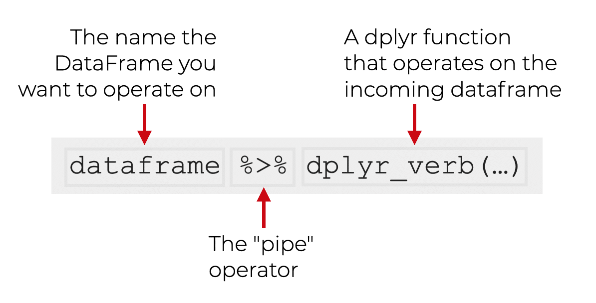
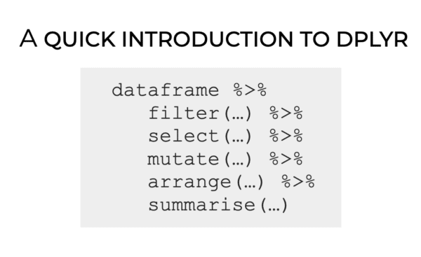

Las variables categóricas se dividen en dos tipos importantes:
Nominales
Ordinales
Dependiendo si las categorias tienen orden o no.
Variable categórica nominal
Una variable categórica es nominal si sus categorías no tienen orden.
. . .
Por ejemplo:
Afiliación a partidos políticos (demócrata o republicano).
Tipo de perro (pastor, sabueso, terrier, otro).
Sistema operativo de la computadora (Windows, macOS, Linux).
Variable categórica ordinal
Una variable categórica es ordinal si sus categorías tienen orden.
. . .
Por ejemplo:
Talla de camiseta (pequeña, mediana, grande).
Nivel de educación (secundaria, universidad, posgrado).
Nivel de ingreso (menos de $50K, $550k-$5100K, mas de $100K).
It is important to note that with an ordinal feature, the difference between, say, small and medium need not be the same as the difference between medium and large. Also, the differences between consecutive categories may not even be quantifiable. Think of the number of stars in a restaurant review and what one star means in comparison to two stars.
Interesante…
Valores enteros (por ejemplo, 1, 2, 3, …, 5) pueden representar categóricas nominales u ordinales.
Representación
1
2
3
4
Tipo de Sangre
A
B
AB
O
Reseña
Mala
Regular
Buena
Muy Buena
. . .
En la práctica, los valores booleanos (TRUE y FALSE) a menudo representan categorías nominales.
Recuerda
Un a diferencia general es …
Variables cuantitativas (discretas o continuas) son en las cuales la suma o resta de sus valores tiene sentido.
Variables categóricas (nominales u ordinales) son en las cuales la suma o resta de sus valores no tiene sentido.
¿Cómo checar el tipo de variable en R?
Una ves cargando los datos en R, podemos ver el tipo de variable al imprimir la tabla de datos. Por ejemplo, consideremos el conjunto de datos penguins.xlsx:
# Imprime las primeras 6 filas de los datos.head(penguins_data)
# A tibble: 6 × 8
species island bill_length_mm bill_depth_mm flipper_length_mm body_mass_g
<chr> <chr> <dbl> <dbl> <dbl> <dbl>
1 Adelie Torgersen 39.1 18.7 181 3750
2 Adelie Torgersen 39.5 17.4 186 3800
3 Adelie Torgersen 40.3 18 195 3250
4 Adelie Torgersen NA NA NA NA
5 Adelie Torgersen 36.7 19.3 193 3450
6 Adelie Torgersen 39.3 20.6 190 3650
# ℹ 2 more variables: sex <chr>, year <dbl>
Las abreviaturas de letras debajo de los nombres de las columnas. Estos describen el tipo de cada variable:
dbl significa dobles o números reales. Para variables continuas.
int significa enteros. Para variables discretas.
fctr significa factores, que R usa para representar variables categóricas nominales y ordinales con valores posibles fijos.
lgl significa lógico, vectores que solo contienen TRUE o FALSE. Para variables categóricas nominales.
También hay otros tres tipos especiales de variables:
dttm significa fechas y horas (una fecha + una hora).
date significa fechas.
chr significa vectores de caracteres o cadenas.
. . .
Más adelante veremos como transformar una variable chr en fctr.
Uno de los comandos más importantes de dplyr es pipe que se ejecuta con el operador %>%. Este operador envía un objeto a una función o expresión de llamada.
La grámatica para usar pipe es la siguiente:

Otras funciones de dplyr
dplyr es una gramática de manipulación de datos que proporciona un conjunto coherente de verbos que le ayudan a resolver los desafíos más comunes de manipulación de datos:
filter() selecciona casos según sus valores.
select() selecciona variables según sus nombres.
mutate() agrega nuevas variables que son funciones de variables existentes
arrange() cambia el orden de las filas.
summarise() reduce múltiples valores a un único resumen.

Para esto, usaremos el conjunto de datos penguins_data.
# A tibble: 6 × 3
species body_mass_g sex
<chr> <dbl> <chr>
1 Gentoo 4500 female
2 Gentoo 5700 male
3 Gentoo 4450 female
4 Gentoo 5700 male
5 Gentoo 5400 male
6 Gentoo 4550 female
mutate()
Con mutate(), podemos agregar nuevas columnas (variables) que son funciones de las columnas en los datos. Por ejemplo, podemos calcular la división de bill_length_mm y bill_depth_mm.
# A tibble: 6 × 4
species body_mass_g sex RadioLengthDepth
<chr> <dbl> <chr> <dbl>
1 Adelie 3750 male 2.09
2 Adelie 3800 female 2.27
3 Adelie 3250 female 2.24
4 Adelie NA <NA> NA
5 Adelie 3450 female 1.90
6 Adelie 3650 male 1.91
arrange()
Podemos ordenar los datos en función de una columna, digamos bill_length_mm. Para ordenar de forma descendente usamos desc(bill_length_mm) en arrange().